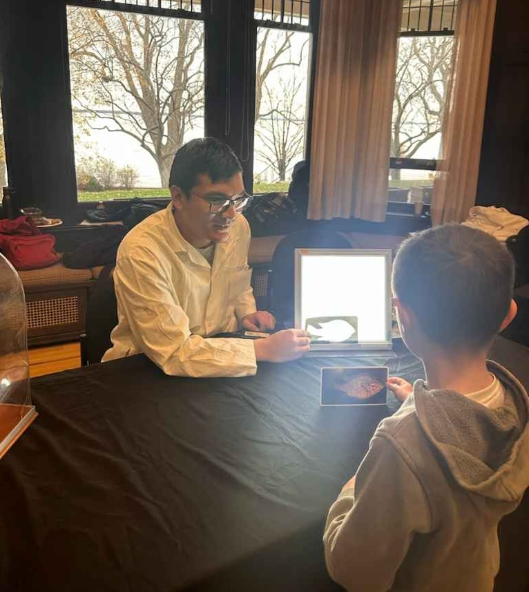

Exposcience
I had the incredible opportunity to participate in the 38th edition of Exposcience at the Stewart Hall Cultural Centre. As part of the Darwin Room exhibition, I contributed to two interactive stations: a hand-washing station to demonstrate the importance of hygiene and an x-ray station to showcase medical imaging. It was an amazing experience to engage with visitors of all ages, share knowledge, and celebrate science in a fun and accessible way.
Concordia Math Fair
I developed an activity centered on the Monty Hall Problem for high school students (grades 9-11) as part of Concordia's 2021 Math Fair. I designed the activity to include an interactive experiment and a guided discussion on counter-untuitive paradoxes. I created custom made activity cards for the experiment.